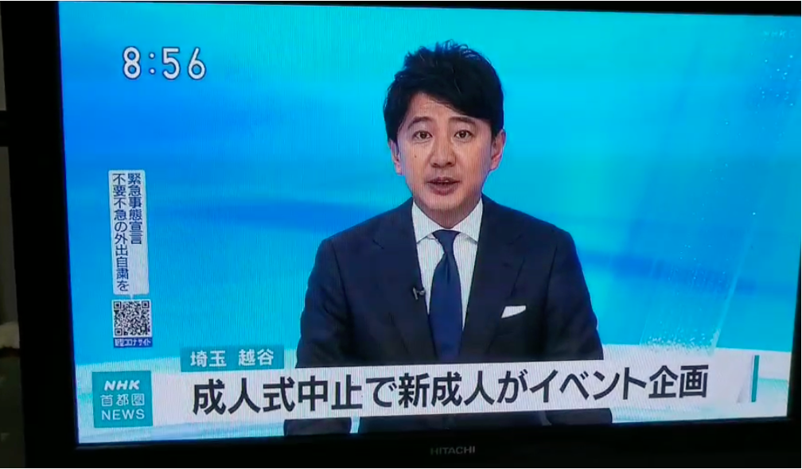
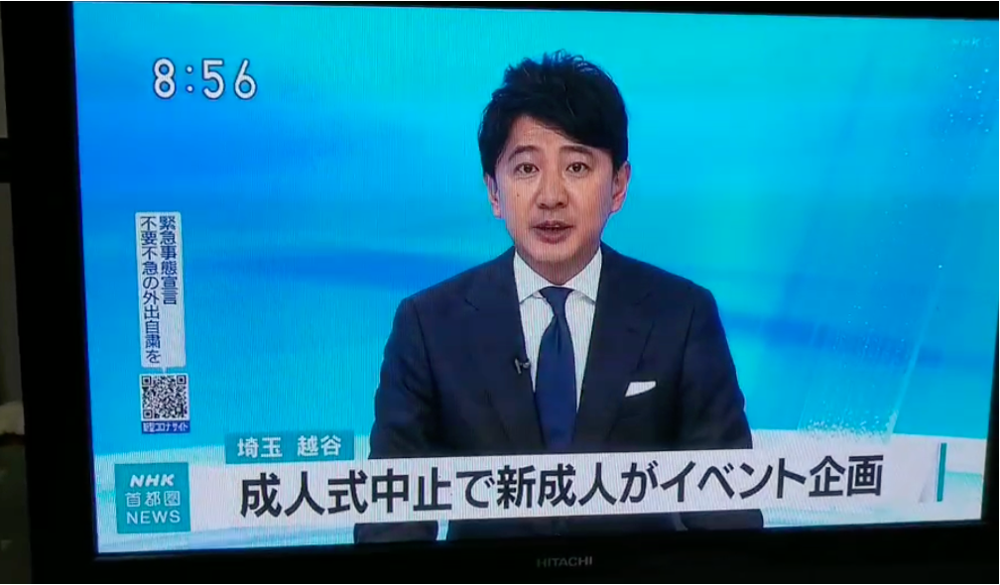

2021年、新型コロナウイルスの影響で、私が住む越谷市では成人式が中止となってしまいました。 一生に一度の成人式が失われることに寂しさを感じ、何かできることはないかと考えていたとき、 元越谷市立西中学校のサッカー部のコーチや先生方と共に**「越谷ミレニアム&+1成人式@埼玉スタジアム」**を企画する機会を得ました。
活動概要
- **Date**: 2021年2月28日
- **Location**: 埼玉スタジアム2002
- **Background**: 新型コロナウイルス感染症の影響による越谷市の成人式中止を受け、同級生と共に成人式を再企画。
- **Role**: 実行委員長に声をかけられ、**書記・映像プロデューサー**として活動しました。 具体的には、会議での資料まとめ、ティザームービー作成、当日のオーロラビジョンでのスライドや映像の作成、 頂いた映像の編集、音響の調節などを担当しました。
- **Funding**: クラウドファンディングにて**160万円**の資金を集めることに成功しました。
- **Guest Messages**: 元KRUSH -65キロ級王者 HIROYAさん、元WBAスーパーフェザー級王者 山内 高志さん、 COLOR,DEEP,LUVANDSOUL KIKURIさん、DEEPリーダー TAKAさんからお祝いのメッセージを頂きました。
- **Media Coverage**: 東部読売新聞に2回掲載されたほか、当日はNHKの取材が行われ、NHK首都圏ニュースにて放送されました。
活動を振り返って
困難な状況の中でも、仲間たちと協力して成人式を企画し、多くの人々の支援を得られたことは、 私にとってかけがえのない経験となりました。 特に、映像制作を通じてイベント全体の盛り上げに貢献できたこと、そして当日の参加者の笑顔を見たときの達成感は忘れられません。 この経験は、目標に向かってチームで協力することの重要性や、困難な状況を乗り越える力を私に与えてくれました。
以下に、当時の活動の様子を伝えるメディア掲載の画像や映像を掲載します。

 
